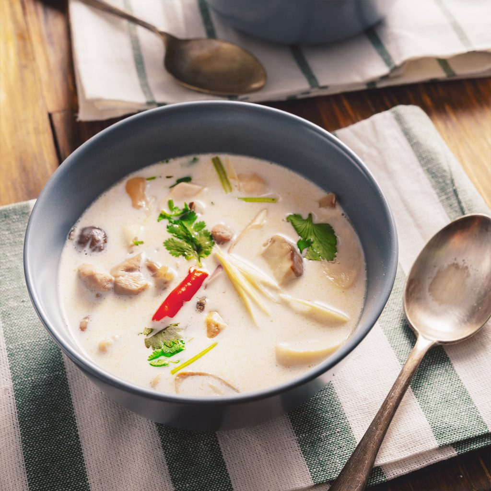

Tom Kha Gai

Description
Filling Thai soup with coconut milk and Thai herbs and spices
Ingredients
- 10 cups chicken stock
- 2 (5 ounce) skinless, boneless chicken breasts, sliced
- ½ cup shiitake mushrooms
- 3 red chile peppers, chopped
- 8 kaffir lime leaves
- 2 stalks lemongrass, chopped
- 2 (14 ounce) cans coconut milk
- ½ cup green bell pepper, chopped
- ½ cup red bell pepper, chopped
- 5 tablespoons fish sauce
- 3 (1 inch) pieces galangal or ginger, peeled and chopped
- 4 tablespoons lime juice
- 6 green onions, sliced
- 1 tablespoon chopped Thai basil
- 1 tablespoon chopped fresh cilantro
Steps
- Pour chicken stock in a large pot and bring to a boil; add chicken, mushrooms, chile peppers, lime leaves, and lemongrass. Boil until chicken is no longer pink in the centers and juices run clear, about 10 minutes. Reduce heat to medium and add coconut milk, bell peppers, fish sauce, and galangal. Boil for 2 minutes; reduce heat to low and add lime juice.
- Taste and adjust soup as necessary. Serve with green onions, basil, and cilantro.